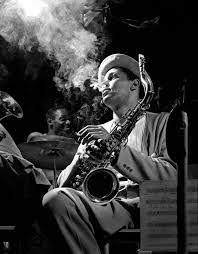

What is Swing/Big Band?
Swing/Big Band is an era of jazz with the instrumentation of four sections: saxophones, trumpets, trombones, and a rhythm section. Big bands originated in the early 1910s and dominated jazz in the early 1940s when swing was most popular. Unlike the other jazz eras of the 20th century, the swing/big band era did not include much improvisation and a solo was often just am ittereation of the melody.
Notable Swing/Big Band Musicians
-
Benny Goodman
Perhaps the biggest woodwind player during the swing era, Benny Goodman Played with greats like Frank Sinatra, and he was the most iconic woodwind player at the time. A song that embodies his style is Sing, Sing, Sing.
-
Sidney Bechet
A lesser-known name in the swing era, Sidney played along side Louis Armstrong. He set the stage for future saxophone players because he was one of the first to push the envolope for what a saxophone can do. He mainly played Soprano Saxophone
-

Coleman Hawkins
Similar to Sidney Bechet, Hawkins was a pioneer to Saxophone, but more Specifically the Tenor Sax. His style was aggressive, but very melodic as well. Albums to study: The Hawk Flies High, Night Hawk, and Desafinado
What is Bop?
Bop, otherwise known as Be-Bop, is a style of music that emerged in the 40's. This genre was very fast-paced and included speedy chord progressions. It will take more practice to learn how to improvise under this genre, but below are a few players that will aid in your Be-Bop improvisation studies.
Notable Bop Musicians
-
Charlie Parker
One of the most impactful saxophonist of all time, Charlie Parker pushed the envelope for what can be possible on the saxophone and composed the most complex chord progressions at the time. With that being said, albums that will aid with mastering the be-bop style are Bird and Diz, The Charlie Parker Story, and Charlie Parker Session
-

Sonny Rollins
Rollins took inspiration from saxophone players such as Charlie Parker and Coleman Hawkins. He played bop and mainly played Tenor saxophone. Notable albums include Saxophone Colossus, The Bridge, and Way Out West
-
Dizzy Gillespie
A contemporary of Charlie Parker, Dizzy was a trumpet player. Both Parker and Dizzy was similar in style and influence, so it is hard to name one without the other.
What is Cool Jazz?
Cool Jazz is basically the opposite of the bop era. Insead of fast progressions and speedy improvisations, Cool jazz is chilled and laid back with simple progressions that allow for more creativity and expression. Below are pioneers of this style of music.
Notable Cool Jazz Musicians
-
Lester Young
One of the Pioneers for Cool jazz, he helped popularize the chilled out jazz style. Notable albums include Lester Young Trio, The Jazz Giants '56, and Going for Myself
-
Stan Getz
Getz was part of the cool Jazz movement, but what separates him from his contemporaries is his work in the Bossa Nova genre. He has a very fuzzy and mellow tone, which makes him a perfect fit for Bossa Nova. Albums include Getz/Gilberto, Jazz Samba, and Stan Getz & Bill Evans
-

Dexter Gordon
Having played Bop in the beginning of his career, Gordon soon expanded to the Cool jazz genre. Albums in this era include Go!, Our Man in Paris, and One Flight Up
What is Hard Bop?
Hard Bop is a Jazz style that is a mixture of Bop and Cool Jazz. It was not as intense as Bop, but rather a bit more tasteful and melodic. This is the last Jazz style before Jazz became fused with other genres and it is seen by many as the perfect mix of all the classic eras.
Notable Hard Bop Musicians
-
John Coltrane
Coltrane's sound, like several other jazz giants, has evolved throughout his life. During the hard bop era, notable albums include Giant Steps, My Favorite Things, and A Love Supreme. Giant Steps was perhaps one of the most important jazz standards of all time, as it is now used as a benchmark for jazz proficiency.
-
Joe Henderson
While known for mostly his work that followed the Hard Bop era, Joe Henderson was still part of the Hard Bop Era, especially with the classic Jazz standard, "Song for my Father"
-
Micheal Brecker
Brecker was one of the first to combine Jazz with rock music, while still playing with Greats like Herbie Hancock, Roy Hargrove, and Chick Corea.